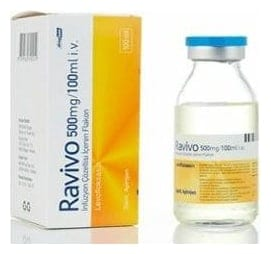

Ravivo 500 mg/100 ml IV İnfüzyon Çözelti İçeren Flakon, 1 Adet

Ne için kullanılır
KT · Bölüm 1RAVİVO, damar içine uygulanan, açık sarı renkli, şeffaf homojen bir çözeltidir. İlacınızın kutusu içinde 1 ml’sinde 5 mg levofloksasin içeren, toplam 100 ml çözelti içeren bir adet cam şişe ve askısı bulunur. RAVİVO ba kterilere karşı etkili bir antibiyotiktir. Florokinolonlar adı verilen antibi yotik grubuna dahildir. Bakterilerin büyümesini, çoğalmasını engeller ve bakterilerin yok olmasını sağlar. RAVİVO etkin maddesi olan levofloksasine karşı duyarlı olan ba kterilerin ne de n olduğu enfeksiyonların tedavisinde kullanılır. Doktorunuz antibi yotik tedavisini ağızda n alamayacak durumda olduğunuz için da mar içine uygulanacak bu RAVİVO formunu, sizde aşağıdaki durumlarda n biri bulunduğu için reçete etmiş olabilir:
• Toplumdan edinilmiş zatür re (pnömoni) • İdrar yolları ve böbrekte gelişen iltiha p (piyelonefrit) da hil, komplikasyonlu böbrek ve idrar yolu enfeksiyonları • Prostat i ltihabı • Deri ve yumuşak doku enfeksiyonları: Apse (irin ke sesi), selülit, furonkül, impe tigo (derinin bulaşıcı yüz eysel mikr obik enfeksiyonu), pi yoderma (irinli de ri enfeksiyonu), yara enfeksiyonlarının neden olduğu komplikasyonsuz deri ve deri ekleri enfeks iyonları. • Hastanede e dinilmiş zatürre ( pnömoni) • Hava ya k arışm ış şarbon mikr obuna maruz kalma